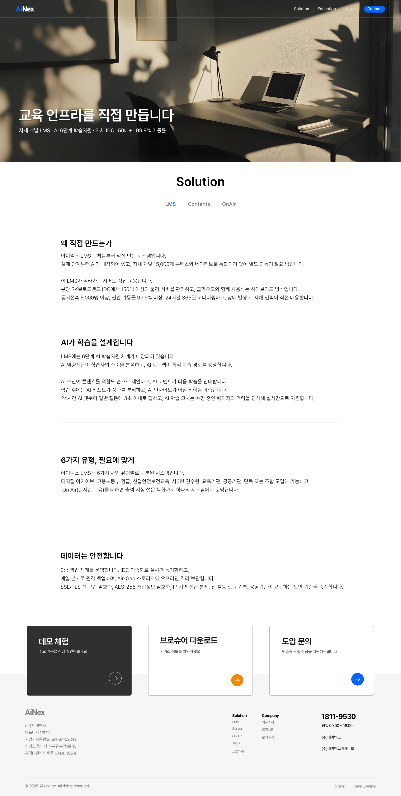
01. Recent main・Web UX
Inex 홈페이지 디자인
기업 홍보 목적에 맞게 교육원 중심 정보와 회사 소개 정보를 분리한 코퍼레이트 사이트 리뉴얼 프로젝트

01. Recent main・Web UX
기업 홍보 목적에 맞게 교육원 중심 정보와 회사 소개 정보를 분리한 코퍼레이트 사이트 리뉴얼 프로젝트

02. Recent・Education UX
법정교육, 공통역량, 리더십역량 등 확장된 교육 카테고리를 사용자가 빠르게 탐색하도록 구조화한 웹 UX
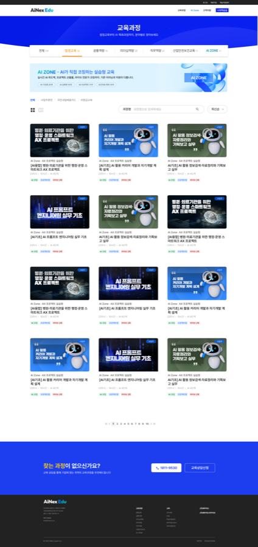
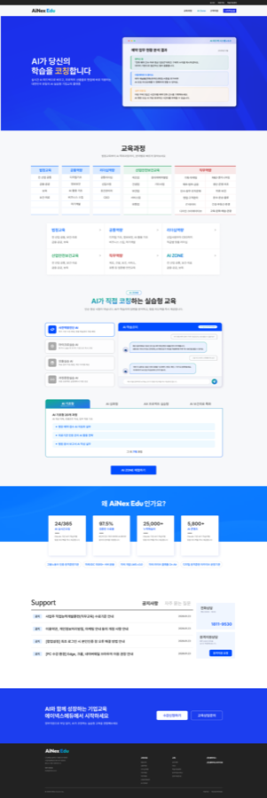
03. Recent・Education UX
늘어나는 교육 카테고리를 한눈에 보여주는 교육원 사이트 리뉴얼


04. Recent・AI Workflow
Claude 프롬프트, 대본 생성, 73장 자막 PNG 제작 흐름을 연결해 대량 콘텐츠 생산 속도를 높인 업무 자동화 사례
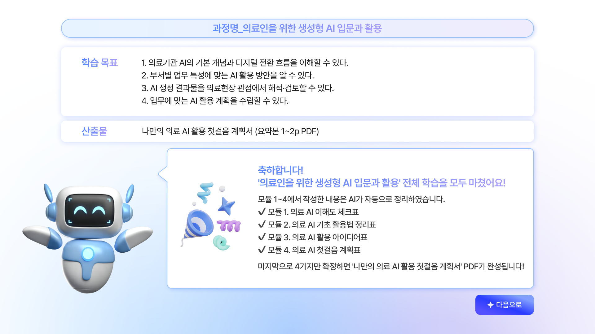
05. Recent・AI UX
AI 특화 교육 과정 안에서 학습자가 테스트를 수행할 수 있도록 답변 영역, 질문 제안, 입력 구조를 설계한 챗봇 UI

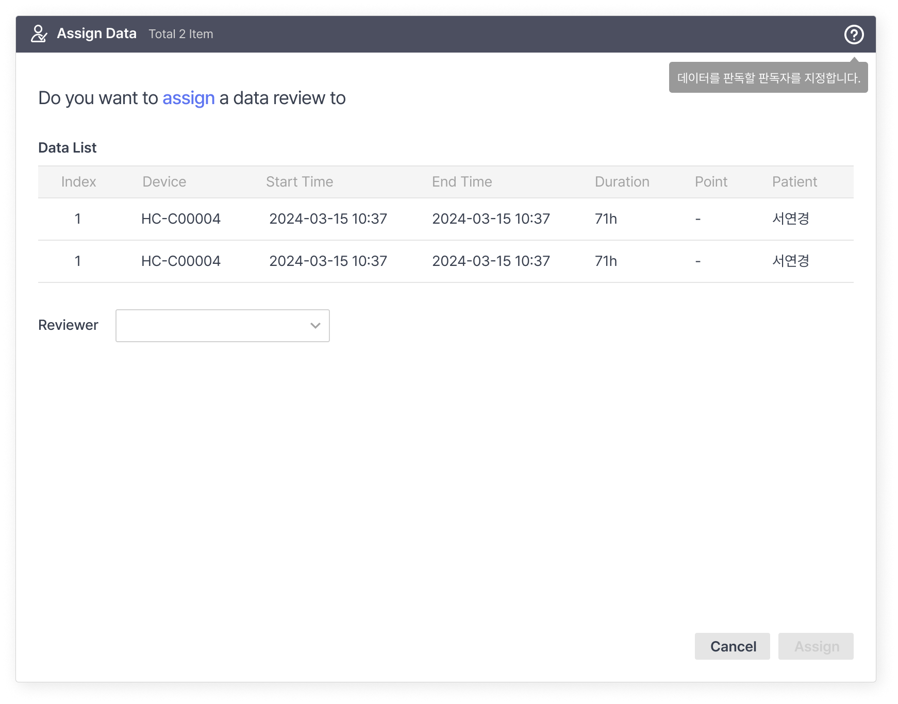
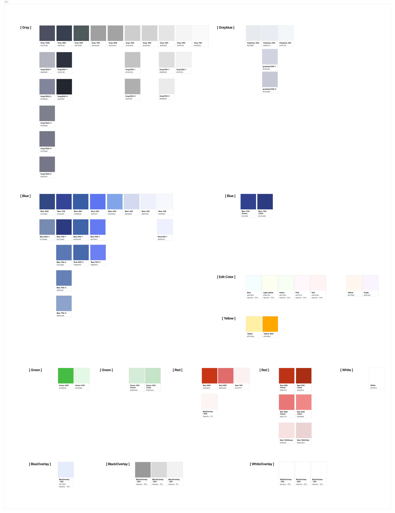
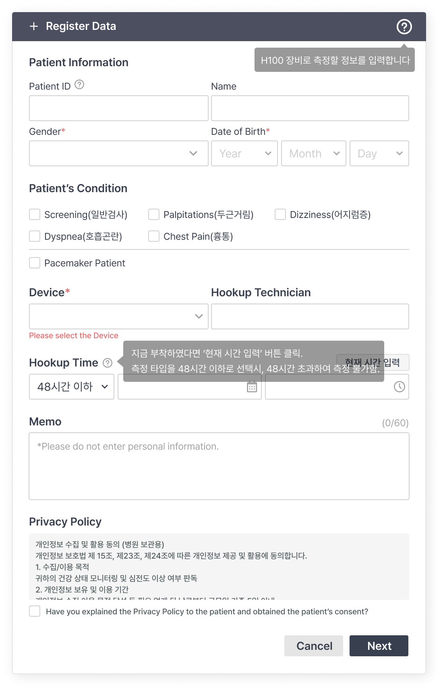
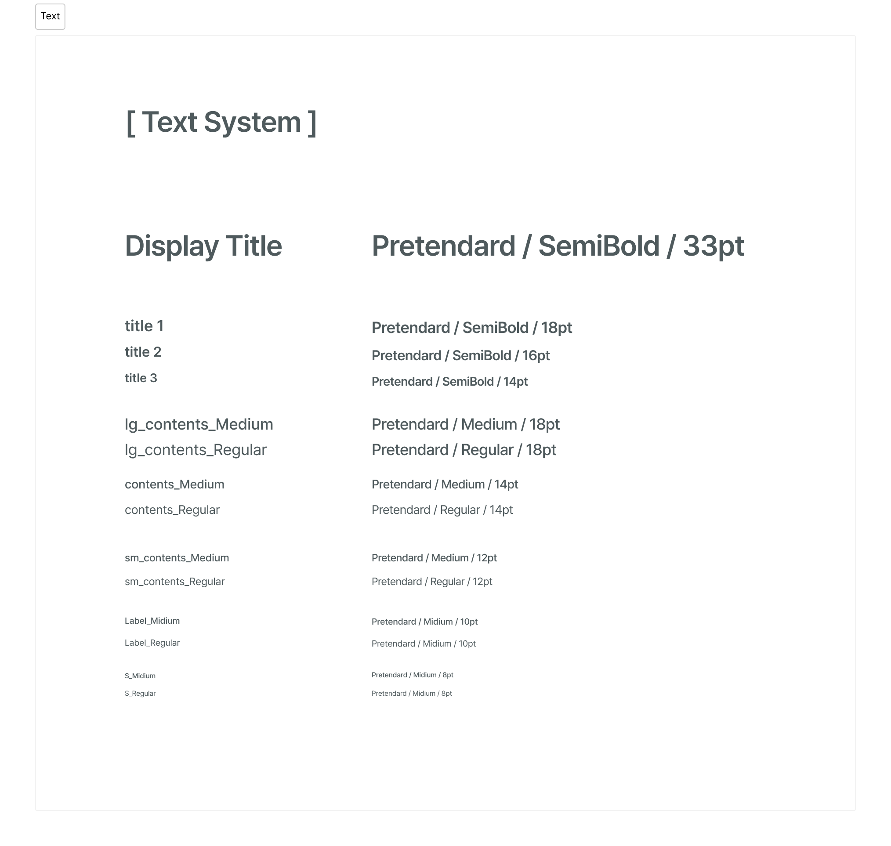
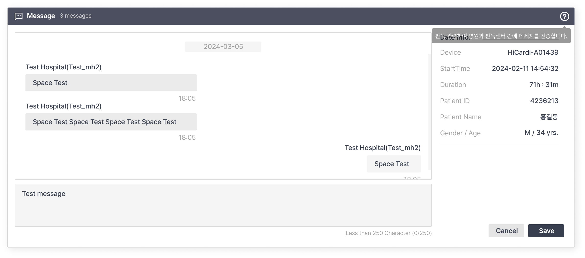
05. Healthcare Web
복잡한 심전도 데이터를 판독자 중심으로 재구성하고 필터링 UI와 디자인 시스템을 개선한 의료 웹 UX 대표 프로젝트
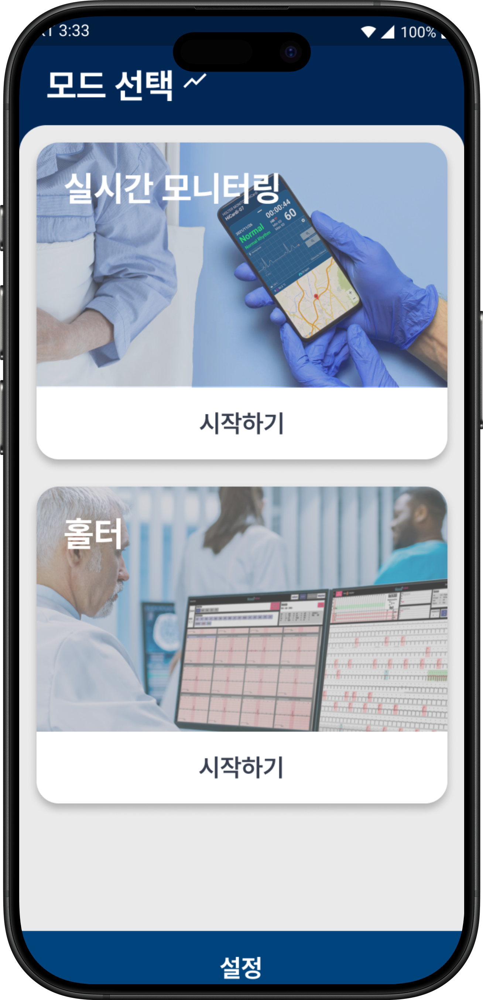
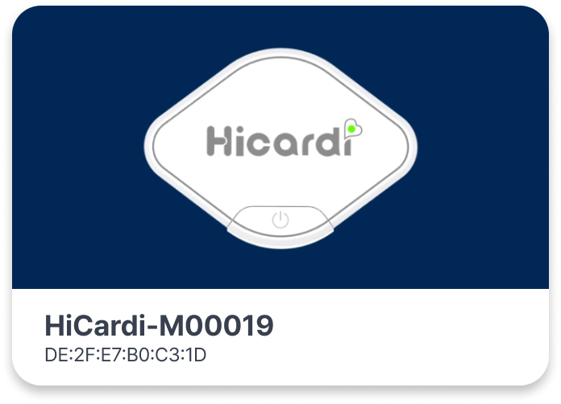
06. Mobile UX
ECG, 12Lead, 산소포화도, 호흡 등 확장되는 의료 데이터를 모바일 화면 안에서 우선순위에 따라 정리한 모니터링 앱
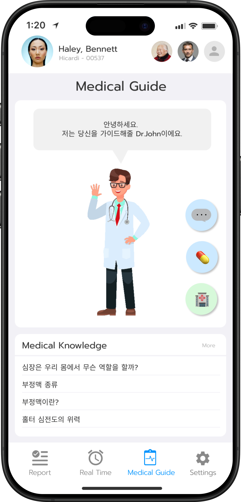
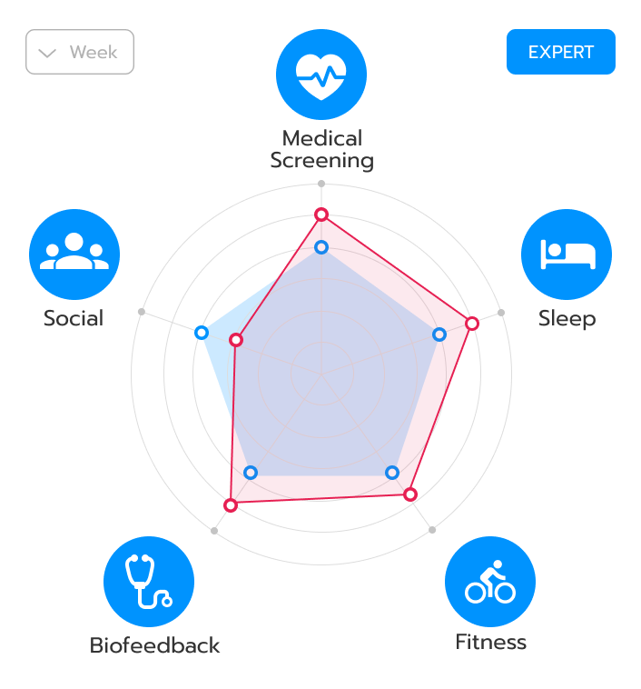
07. UX Case・Wellness
의료기기 기반 심전도 데이터를 일반 사용자가 이해 가능한 건강관리 경험으로 확장한 웰니스 모바일 앱

08. UX Root ・Product Design
수술 현장 관찰과 수술 프로세스 분석을 바탕으로 인공관절 케이스 내부를 모듈화하고 양산・수상까지 이어진 프로젝트

09. Product Design
오토바이 블루투스 제품의 자사 고유 외형 콘셉트를 제안하고 실제 생산・양산까지 연결한 전자제품 디자인 프로젝트
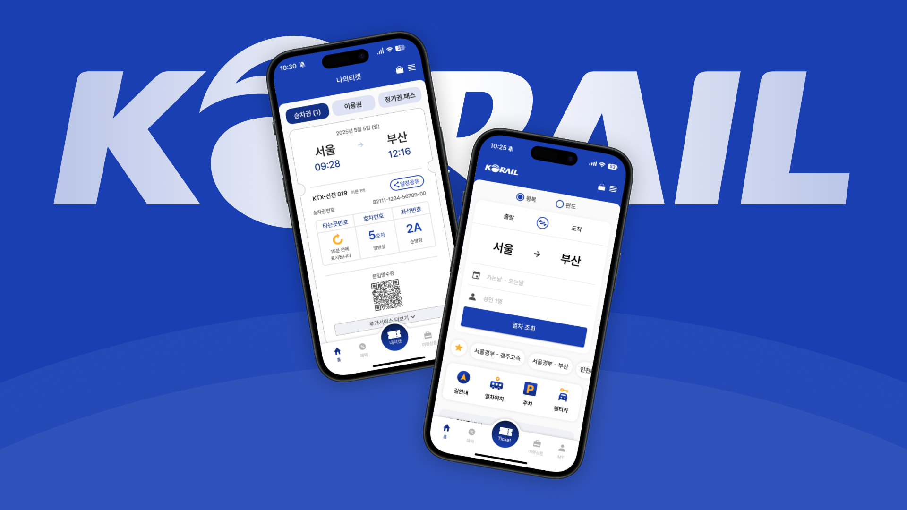
11. App Redesign
코레일 앱의 주요 기능 접근성과 화면 흐름을 사용성 관점에서 다시 정리한 개인 앱 리디자인 프로젝트
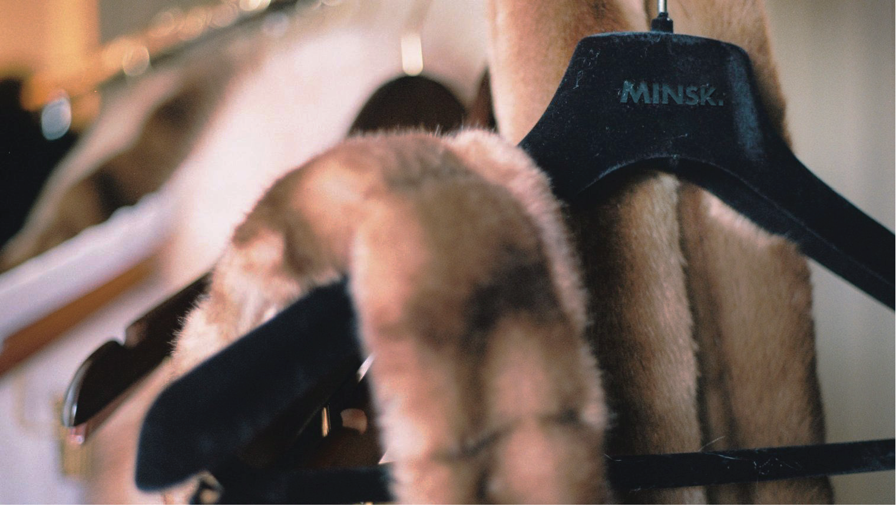
12. Branding ・Motion
모피 산업의 문제의식을 페이크 퍼 브랜드의 홍보 영상으로 풀어낸 브랜딩・스토리텔링 기반 졸업작품